| Home | Kontakt | Steckbrief |
| Wandern/Trekking |
| Klettern/Klettersteige |
| Kanu |
| Fahrradtouren |
| Rucksack-Reisen |
| Touren mit Kindern |
| Wissenswertes |
| Werbung |
Hüttentour am Großvenediger28.07.2006Lange geplant. Nun ist es so weit. Wir steigen in Duisburg um 19:37 Uhr in den CNL313. Einem Nachtzug, der uns am nächsten Morgen gegen 5 Uhr in Salzburg ausspucken soll. Wir, das sind. Monika, Frank, Elmar und meinereiner. In Frankfurt stösst noch Simone dazu. Die Fahrt nach Salzburg verschlafen wir plangemäß größtenteils.29.07.2006In Salzburg angekommen findet sich um diese unchristliche Uhrzeit noch kein Frühstückslokal in Bahnhofsnähe, so dass wir um kurz nach sechs den nächsten Zug nach Zell am See nehmen. Hinter Salzburg sehen wir Wassertropfen auf den Zugscheiben. Super. Nach Wochen der Trockenheit und Hitze fängt es ausgerechnet zum Tourstart an zu regnen. In Salzburg gibt es dann ein paar belegte Brötchen für uns und wir fahren mit der Schmalspurbahn und einem Postbus weiter über Mittersill nach Hollersbach (800m), dem Startpunkt unserer Bergtour. Etwa gegen 10 Uhr machen wir uns auf den Weg durch das Hollersbachtal Richtung Süden zur Neuen Führter Hütte. Der erste Teil des Weges bis zur Talstation der Materialseilbahn kann auch mit einem Hüttentaxi zurückgelegt werden aber wir wollen per fear means aufsteigen. So geht es zu Fuß über einen Fahrweg durch das Hollersbachtal langsam bergauf, bis wir nach 12 Kilometern in 1600m Höhe die Talstation der Materialseilbahn erreichen. Unsere Kleidung ist mittlerweile nass bis auf die Unterhose, was aber nicht heißt, dass die Unterhose trocken ist. Hier beginnt nun der eigentliche Aufstieg zur Hütte in 2201m Höhe. Um 17:30 erreichen wir die Hütte und bekommen einen Schlafplatz im Winterraum zugewiesen. Die Hütte selber ist wegen einer Sektionsveranstaltung ziemlich voll und leider auch der Trockenraum. Hier treffen wir auch auf eine sehr unangenehme Art von Hüttenbesucher. Fremde Sachen werden im Trockenraum auf den Boden geworfen, damit die eigene Kleidung Platz findet und trockene Sachen werden nicht entfernt. Wir lassen uns aber von diesen Egoisten nicht die Laune verderben.
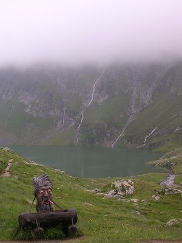
Der Kratzenbergsee an der Neuen Führter Hütte 30.07.2006Der Regen hat nachgelassen und wir wandern von der Neuen Führter Hütte auf dem Führter Weg hinauf bis zum Sandebentörl auf 2753m. Dort oben machen wir erst einmal Rast und bewundern die Wolkenfetzen, die vom Kratzenbergsee hinaufgeweht werden.
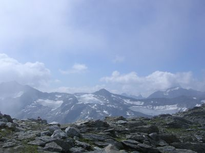
Blick vom Sandebentörl Wir folgen dem Weg Nummer 902/917 weiter hinunter bis zum Viltragenbach (2205m), den wir überqueren und am Gegenhang bis zur Alten Prager Hütte (2489m) wieder aufsteigen. Von dort hat man einen schönen Blick auf den Großvenediger, seiner Gletscher und den unterhalb der Hütte liegenden unteren Keesboden.
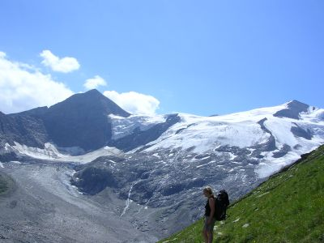
Weg zur Alten Prager Hütte Diesen Gletscherabschnitt wollen wir morgen überqueren aber ich vermisse die Stative auf dem Gletscher, die im letzten Jahr noch den Weg markierten. Nach Rücksprache beim Hüttenwirt hat er uns versichert, dass der Gletscher immer noch nahezu spaltenfrei zu überqueren ist und nur die Stative nicht aufgestellt worden sind. Nach einem Apfelstrudel und einem Kaffee gehen wir weiter bis zur Neuen Prager Hütte (2796m), da man in der Alten Prager Hütte leider nicht übernachten kann. Schade, denn das Pächterpäarchen ist sehr nett und die Atmosphäre viel persönlicher. An der Neuen Prager Hütte merke ich, dass ich bei der Reservierung einen Fehler gemacht habe. Ich habe Halbpension bestellt, was an dieser Hütte leider bedeutet, dass man zusätzlich zu den Übernachtungskosten noch einmal 27 Euro fürs Abendessen und Frühstück bezahlt und das Abendessen festgelegt ist. Das vegetarische Abendessen bestand zudem noch aus hoffnungslos zerkochten Spaghetti mit einer angebrannt schmeckenden Sahnesoße. Der kulinarische Tiefpunkt der Woche. Das nächste Mal würde ich dort abends lieber a la Card essen und das für 9,50 Euro recht schmale Frühstück (3 Scheiben Brot) ausfallen lassen. 31.07.2006Wir verlassen die Neue Prager Hütte und gehen wieder hinunter zur Alten Prager Hütte. Von dort gehen wir steil hinunter zum Gletscher. Dieser Wegabschnitt ist recht steil und man muß stellenweise an großen Blöcken vorbeiklettern. Der Gletscher ist vergleichsweise einfach auch ohne Ausrüstung zu überqueren, da sich dieser Bereich in einer nahezu spaltenfreien Kompressionszone befindet.
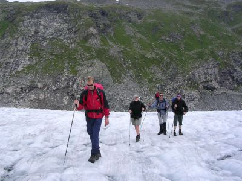
Auf dem fast spaltenfreien Gletscher Nach dem Gletscher verläuft der Weg steil ein Moränenfeld hinauf bis man wieder auf den Venediger Höhenweg Nummer 921 trifft (2400m). Wir folgen dem Weg hinauf bis zum Löbbentörl (2770m). Von dort lässt sich der innere Knorrkogel (2884m) in ca. 20 Minuten besteigen. Da es aber wieder leicht anfängt zu regnen verzichten wir darauf und folgen dem Weg bis zur Badener Hütte (2608m). Wie der Zufall es will treffen wir an dem Abend Hans Führer, den Autor des Rother Gebietsführers auf der Hütte. Er kann uns einige Hinweise zur Galtenscharte, unserer Herausforderung für den nächsten Tag, geben. Das Abendessen auf der Badener Hütte ist super. Abends gibt es noch ein Gewitter. 01.08.2006Wir stehen sehr früh auf, da für den Nachmittag Regenfälle angekündigt sind. Wir verlassen die Hütte und gehen hinunter bis zum Achselsee (2225m). Kurz vor dem See spaltet sich der Weg. Links geht es hinunter ins Tal nach Gruben. Rechts auf dem Weg Nummer 922 Richtung Bonn-Matreier Hütte. Ein Weile lang geht es an einem steilen Grashang entlang, der Tiefblicke ins Tal zu einigen Almen bietet. Nachdem man den Malfrosnitzbach überquert hat (2320m) beginnt der Aufstieg zur Galtenscharte.
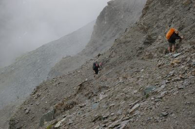
Bei schlechtem Wetter in der Galtenscharte Der Weg ist mit Drahtseilen versichert und steinschlaggefährdet. Man sollte hier also nicht lange verweilen. Der Aufstieg bis zur Scharte (2882m) dauert etwa 40 Minuten und bietet atemraubende Tiefblicke. Während des Aufstieges beginnt es an zu regnen. Zu spät. Jetzt kehren wir nicht mehr um. Außerdem ist der Aufstieg psychologisch wesentlich leichter als der Abstieg. Hinter der Scharte geht es zuerst über eine glatte Steinplatte bergab. Dort hängt aber ein Drahtseil. Danach wird der Weg einfacher. Kurze Zeit später kommt die Kälberscharte (2791m).
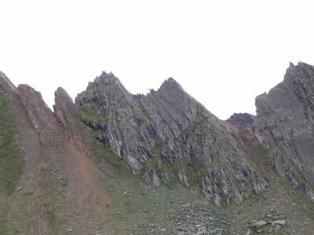
Links die Kälberscharte Diese Scharte ist wesentlich einfacher. Kurz nach der Scharte bietet sich die Möglichkeit den 3070 Meter hohen Rauhkopf zu besteigen. Wir verzichten darauf, weil es mittlerweile wie aus Eimer gießt und das Wasser langsam in die Schuhe dringt. Wir erreichen gegen 13 Uhr die Bonn-Matreier Hütte, wo wir uns erst einmal eine wärmende Suppe gönnen und unsere Sachen trocknen.
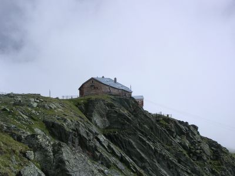
Die Bonn-Matreier Hütte 02.08.2006Wir verlassen die Bonn-Matreier Hütte und gehen auf dem Großvenediger Höhenweg nach Westen. Das Wetter ist trocken aber bewölkt. Ab und zu reißt die Wolkendecke auf und wir können ins Virgental hinabschauen.
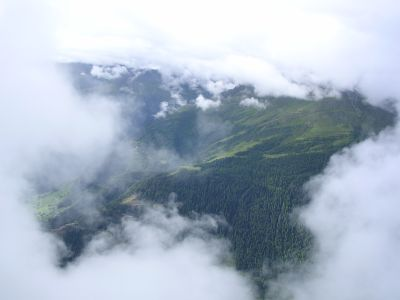
Manchmal wird der Blick ins Tal frei Der Weg geht ohne große Höhendifferenzen über einige kleinere Scharten bis zur Eisseehütte (2521m). Der Venediger Höhenweg geht über die Zopatscharte (2958m) weiter bis zur Johannishütte (2121m). Wir gehen aber eine andere Alternative. Von der Eisseehütte gehen oberhalb des Timmelstales Richtung Sajathütte (2575m).
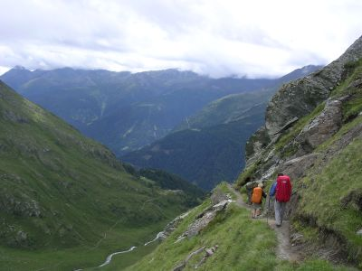
Über dem Timmelstal Der Weg geht wunderschön ohne große Höhendifferenzen am Hang mit Blicken ins Virgental entlang. Wir erreichen die Sajathütte gegen 15 Uhr. Danach steht uns noch der Sinn nach einer Herausforderung und wir gehen den Abstiegsweg des Klettersteiges auf die Rote Säule hinauf. Ein ziemlich steiler Grashang. Als die Drahtseile des Klettersteiges anfangen beschließen wir aber umzukehren, da es jetzt ohne Klettersteigausrüstung ziemlich gefährlich wird. Ohne Gipfelerfolg kehren wir zurück zur Hütte. Die Sajathütte wurde im April 2001 von einer Lawine zerstört und an gleicher Stelle wieder aufgebaut. Es ist eine Privathütte und bezeichnet sich selbst als Schloß in den Alpen.
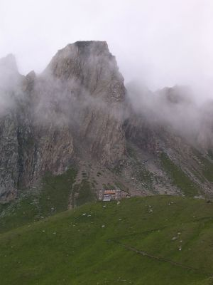
Die Sajathütte mit der Roten Säule 03.08.2006Für heute ist Schnee bis 2400m hinunter angesagt. Schlecht, denn wir müssen auf unserem Weg zur Essener-Rostocker Hütte über die Sajatscharte (2800m) und über das Türmljoch (2790m). Wir stehen also früh auf und sind die ersten beim Frühstück. Die Berge rundherum sind leicht mit Schnee gepudert aber die Sajatscharte lässt sich problemlos gehen. Hinter der Scharte gibt es einige steinschlaggefährdete Bereiche, die man zügig durchgehen sollte.
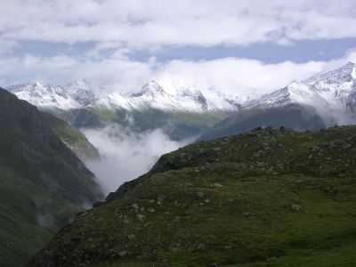
Klar erkennbare Schneefallgrenze Dann folgen wir dem Weg hinunter bis zur Johannishütte (2121m). Der Schneefall hat sich wieder in Regen verwandelt und wir kehren dort für eine Stunde ein. Trotz der frühen Uhrzeit gibt es dort schon eine warme Suppe. Da der Regen weiter anhält und auch nicht vorhat nachzulassen machen wir uns irgendwann auf. Es geht auf dem Weg Nummer 913, auch Schweriner Weg genannt hoch bis zum Türmljoch. Dort oben liegen schon circa 15cm Neuschnee. Die Orientierung ist aber noch möglich, da die Wegweiser senkrecht stehen und somit die Markierungen noch nicht unter dem Schnee verschwunden sind. Um 15 Uhr erreichen wir nach dem Abstieg zum Maurer Bach die Essener-Rostocker Hütte. Teilweise ist der Weg ein einziger Bach und so sind wir froh die Hütte zu erreichen und die nassen und kalten Sachen ausziehen zu können. 04.08.2006Um 9 Uhr steigen wir von der Hütte ab durch das Maurer Tal bis nach Ströden. Da wir noch Zeit haben, bis unser Bus fährt gehen wir weiter bis nach Hinterbichl. Von dort fahren wir mit dem Bus bis nach Matrei, wo wir leider fast drei Stunden Aufenthalt haben. Zeit für ein Mittagessen bis der Bus nach Mittersill kommt. Von Mittersill fahren wir nach Zell am See und weiter bis nach Salzburg. In Salzburg hängen wir noch ab, bis um 23:44 unser Nachtzug CNL312 kommt.05.08.20069:29 Uhr. Ankunft in Duisburg.
|